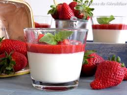

Panna Cotta Fraises Basilic
Surprenez vos invités par cette association du basilic et de la fraise , c'est un vrai régal. on sent bien le goût du basilic qui a infusé dans la crème.
Ingrédients
- 2 feuilles de basilc
- 125gr de fraises
- 1 gousse de vanille
- 7g de gélatine
- 75g de sucre (dont 25g pour le coulis)
- 250g de crème fleurette
Recette
- Porter à ébullition la crème avec le sucre et la gousse fendu. Hors du feu, ajouter la gélatine et bien mélanger avec un fouet. Verser la crème dans les pots et réserver au frais pendant quelques heures.
- Faire chauffer les fraises avec 25g de sucre et les feuilles de basilic.
- Mixer le melange fraises et basilic et le mettre a refroidir
- Verser le coulis sur la creme dans les pots
- Effectuer une décoration avec les fraises restante et une feuille de basilic